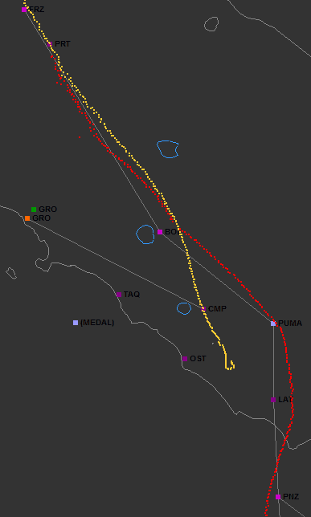
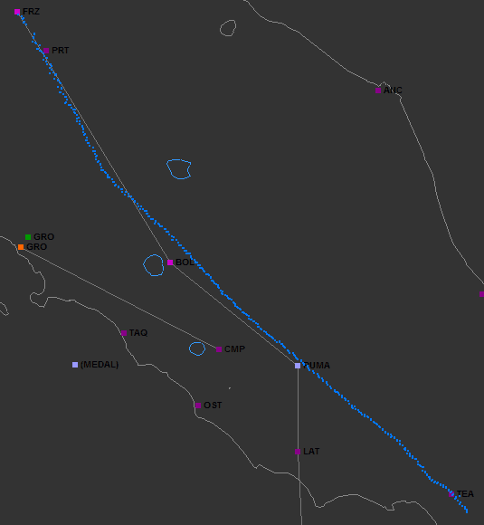
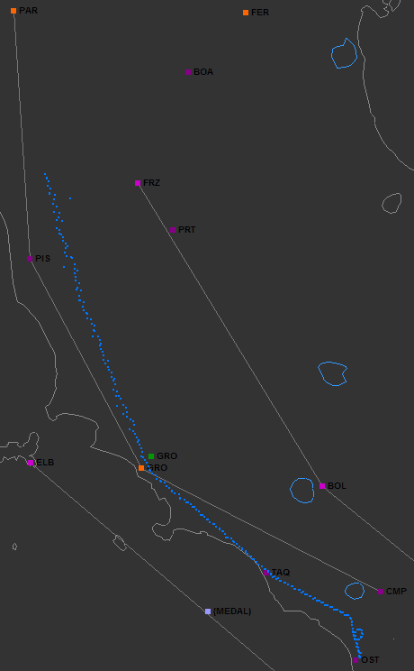
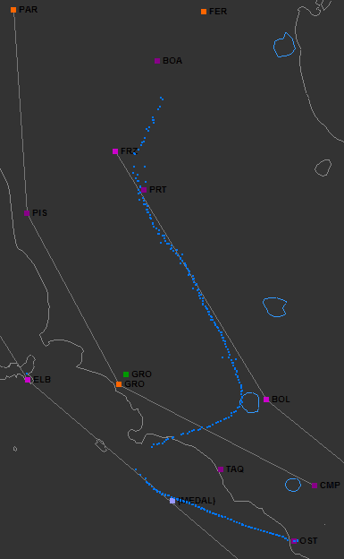
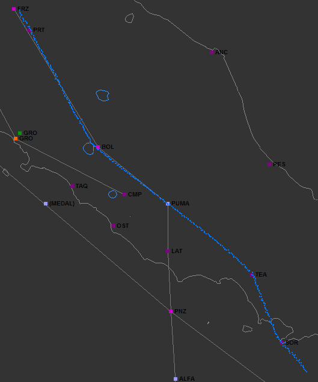
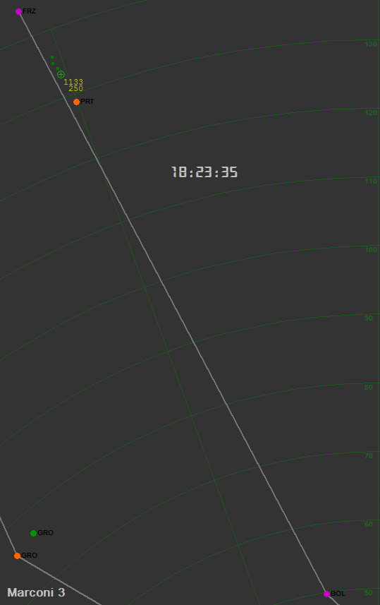
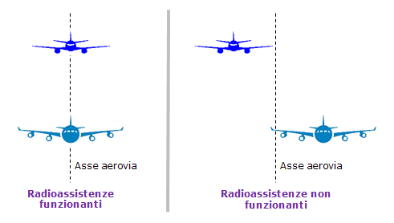
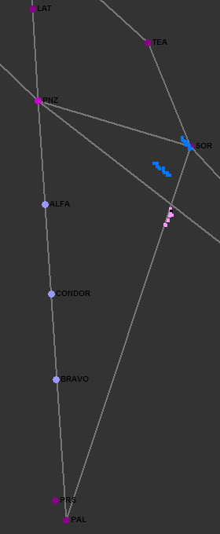

Stato delle radioassistenze
Luogo comune: le radioassistenze erano tutte spente.
Motivazione: lo scopo era creare problemi al DC-9 Itavia o al MiG-23 nella sua scia.
"Abbiamo trovato un cimitero stasera, venendo da Firenze in poi, praticamente non ne abbiamo trovata una funzionante".
È la frase pronunciata dal Comandante Gatti, passata alla storia, che ha dato origine a varie ipotesi secondo le quali le radioassistenze sarebbero state intenzionalmente spente per creare problemi al DC-9 Itavia o al MiG-23.
Prima di procedere, è indispensabile capire bene cos'è una radioassistenza.
Capito questo, è evidente che quando si dice che una radioassistenza non funziona, non significa necessariamente che tutti i 3 o 4 trasmettitori che la compongono non stanno funzionando; può essere che sia solo il VOR a non funzionare o solo l’NDB o qualunque altra combinazione.
Quali radioassistenze funzionavano realmente?
L'affermazione "era tutto spento" che capita di leggere e sentire fin troppo spesso è eccessivamente semplicistica per essere presa sul serio.
È, quindi, necessario appurare quali radioassistenze erano funzionanti, malfunzionanti o spente e se il loro spegnimento sia stato intenzionale o se sia stato causato dal temporale della mattina, dalla manutenzione programmata (generalmente mensile o quattordicinale) o da altri fatti accidentali.
Per far questo, oltre alle radioassistenze che interessano direttamente l’IH870, bisogna cercare di considerare anche le altre, altrimenti non possiamo capire se volevano spegnere proprio quelle usate dall’IH870 o se c’erano avarie generalizzate.
Possiamo sfruttare tre fonti oggettive: documenti processuali, comunicazioni TBT, tabulati radar.
1) Documenti processuali
Dai documenti processuali otteniamo poche informazioni.
"Memoria Gamberini, Marini, Di Maria - 19 maggio 1999" pag. 23: il TACAN di Ghedi funziona, quello di Villafranca no, è in avaria da una settimana.
"TITOLO 2 - L’istruttoria dal 27 luglio 90 al 31 dicembre 97" pag. 626: il VOR di Catania non funziona, ma sia il DME (sperimentale) che l’NDB funzionano. Pag. 281: "il volo IH779 si era in precedenza lamentato del funzionamento delle radioassistenze di Firenze e Bolsena".
2) Comunicazioni TBT
Non c’è dubbio che i piloti si lamentano e Roma conferma: "in effetti è un po' tutto fuori", quindi è evidente che c’è una situazione insolita sullo stato delle radioassistenze.
Nel sito NOI DELL' ITAVIA, si legge che il percorso del DC-9 era: Firenze, A-14, Bolsena, PUMA, Latina, Ponza, A-13, Palermo.
Vediamo cosa si deduce dalle frasi che si scambiano piloti e controllori.
Bologna NDB (probabilmente il VOR/DME non era ancora presente all'epoca dei fatti): questo radiofaro era usato per la partenza strumentale (v. "
Fasi del volo - Comunicazioni T/B/T") e risulta funzionante, in quanto l'IH870 è in grado di effettuare la procedura di partenza strumentale (basata sull'NDB di Bologna).
Ad esempio, la comunicazione "1820/Z: IH-870 STA LASCIANDO IL TRAVERSO DI BOLOGNA LA 870" dimostra che il DC-9 è in grado di sapere di essere al traverso dell'NDB, è, pertanto, ovvio che il radiofaro funziona.
Firenze VORTAC: funziona "male".
20.23.38 =ROMA= 870 A CHE DISTANZA E' DA FIRENZE?, =IH870= SIAMO PROSSIMI A PERETOLA, 15 MIGLIA A SUD [di Firenze, ndr].
=IH870= LA 870 E' PERFETTAMENTE ALLINEATO SULLA RADIALE DI FIRENZE, ABBIAMO 153 IN PRUA.
Funziona sia il VOR ("ALLINEATO SULLA RADIALE DI FIRENZE") che il TACAN ("15 MIGLIA").
Poi però, allontanandosi: "=IH870= CI DOBBIAMO RICREDERE SULLA FUNZIONALITA' DEL VOR DI FIRENZE", per cui il funzionamento deve essere "instabile".
Bolsena VORTAC + NDB: sembrerebbe funzionare.
Il comandante Gatti, intorno alle 18:45 dice: "ABBIAMO TROVATO UN CIMITERO STASERA, VENENDO DA FIRENZE IN POI, PRATICAMENTE NON NE ABBIAMO TROVATA UNA FUNZIONANTE". In quel momento, il DC-9 si trova al traverso di Latina, circa 7 o 8 nm ad est dell'asse dell'aerovia, per cui sembrerebbe che sia Bolsena che Latina siano del tutto spente (a giudicare dal "cimitero" di cui parla Gatti), ma quando, intorno alle 18:30, il controllore aveva autorizzato: "[...] VADA DIRETTO A BOLSENA", il DC-9 ha dato il ricevuto schiacciando 2 volte il pulsante del microfono, ciò significa che l'IH870 era in grado di dirigersi su Bolsena e per far questo è necessario che avesse funzionato almeno una delle tre radioassistenze di Bolsena.
Abbiamo anche: "20.34.50 =IH870= BUONASERA, LA 870 A 290 E' SU BOLSENA", per dirlo, deve funzionare almeno il TACAN (dal quale il DC-9 riceve solo la distanza) o il VOR o l'NDB.
È, quindi, probabile che il "praticamente" debba essere interpretato come un "quasi": da Firenze in poi (cioè Bolsena e Latina) non funziona quasi niente.
Latina VOR + DME (Latina NDB non usato per la navigazione in aerovia): sembrerebbe funzionare.
Ragionamento simile a quello fatto per Bolsena.
Abbiamo, inoltre: "=IH870= GOOD EVENING, 870 WE ARE MAINTAINING 290 AND APPROACHING PUMA"; per sapere che si stanno avvicinando al punto PUMA, potrebbero vederlo dalla distanza dal TACAN di Bolsena o dal DME di Latina, oltre che, ovviamente, dal VOR di Latina.
Ponza VORTAC + NDB: non funziona né il VOR né l’NDB; il TACAN funziona.
=IH870= SI', SENTA, NEANCHE PONZA FUNZIONA?
=ROMA= E SI', IN EFFETTI E' UN PO' TUTTO FUORI, COMPRESO PONZA.
=IH870= SI', PAPA ALFA LIMA LO ABBIAMO GIA' INSERITO, VA BENE, E ABBIAMO IL DME DI PONZA
Palermo VOR + DME + NDB e Punta Raisi VOR + DME + NDB: sia il VOR che il DME di Palermo e il DME di Raisi funzionano certamente.
=IH870= SI', PAPA ALFA LIMA [Palermo, ndr] LO ABBIAMO GIA' INSERITO, VA BENE, [...]
=ROMA= PERFETTO, ALLORA, NORMALE NAVIGAZIONE PER PALERMO, [...].
Se il VOR o il DME di Palermo non avesse funzionato, il controllore non avrebbe potuto autorizzare: "NORMALE NAVIGAZIONE PER PALERMO", in quanto la parte sud dell'aerovia A-13 non è più sotto controllo radar, ma passa al controllo procedurale.
Ricevono anche il DME di Raisi: "20.57.00 =IH870= 115 MIGLIA PER PAPA ALFA.... PER PAPA ROMEO SIERRA [Punta Raisi, ndr], SCUSATE, MANTIENE 250".
Il controllore autorizza direttamente per il VOR/DME di Punta Raisi: "=ROMA= 870 RICEVUTO, AUTORIZZATI A RAISI VOR, [...]", che è utilizzato per l’avvicinamento iniziale, per cui è certo che funziona anche il VOR (oltre al DME).
Abbiamo un’ulteriore informazione sullo stato del VOR/DME di Campagnano (usato per l’avvicinamento iniziale sia a Ciampino che a Fiumicino). Non riguarda il DC-9 abbattuto, ma è un elemento in più da analizzare.
20.32.44 =ROMA= LA 779 TENDE A SPOSTARSI SULLA SINISTRA, ORA E' 8 MIGLIA A SINISTRA, VADA DIRETTO A CAMPAGNANO CON UNA PRUA DI 160 DALLA PRESENTE
=IH779= OK, 160 LA 779
Il volo IH779 è quello che passa molto vicino all’IH870. Dalle comunicazioni, sembra che Campagnano non abbia alcun problema, sicuramente il VOR funziona.
3) Tabulati RADAR
Questo tipo di analisi è simile a quelle fatte in varie perizie e consiste nel riportare su di una cartina i tabulati radar con il fine di dedurre oggettivamente il funzionamento delle radioassistenze analizzando se e come queste vengono seguite dagli aerei.
Chiaramente, questo tipo d’analisi può solo prendere in considerazione le radioassistenze che forniscono l’azimut (VOR e NDB).

Iniziamo dai due voli Itavia: IH870 (rosso) e IH779 (giallo).
Firenze: entrambi seguono bene la rotta in uscita da Firenze fino ad una certa distanza, poi non lo fanno più. Sembra proprio confermato ciò che ho scritto nel paragrafo "Comunicazioni TBT".
Bolsena,
Latina e
Ponza: fuori uso (parliamo di VOR e NDB, non di DME e TACAN).
Campagnano: l’IH779 lo riceve perfettamente, tanto da sorvolarlo per poi atterrare a Ciampino.

Volo con transponder 0444 (sembra decollare da Napoli).
Teano VOR + DME + NDB: riceve perfettamente il VOR o l’NDB o entrambi.
Bolsena: ancora fuori uso (l’aereo è all’altezza di Bolsena alle 18:55, 20 minuti dopo dell’IH870).
Firenze: stesse considerazioni già fatte nella precedente cartina.
Il tracciato per il volo 0445 (molto simile a quello del 0444) conferma quanto appena detto.

Volo 1140. Scende dal VOR di Parma per atterrare a Fiumicino.
Sia l’NDB di
Grosseto (arancione) che il VOR e/o l’NDB di
Tarquinia (VOR + DME + NDB) funzionano.
Il VOR di
Pisa (VOR + DME) è in dubbio.
Si può ipotizzare che non funzioni dal fatto che l’aereo ha inizialmente seguito la rotta PAR – PIS (aerovia UA-41), ma prima di arrivare a Pisa, il controllore l’ha autorizzato diretto per Grosseto, invece di fargli continuare il volo fino a Pisa.
Ma si può anche ipotizzare che il controllore abbia consentito all’aereo di “raccordare” i due segmenti per accorciare leggermente il percorso, anche con Pisa funzionante.
Il VOR di
Parma funziona.

Volo 5357. Decolla da Fiumicino. E’ un aereo a corto raggio semi-vuoto che s’arrampica in meno di 15 minuti al livello 350.
Ostia (VOR + DME) funziona.
Elba (VORTAC + NDB) funziona, perché viene seguito per una decina di miglia. Poi il controllore dà il vettore per Bolsena (che continua a non funzionare).
Notare l’assenza di plot quando l’antenna del radar ha l’aereo contro il Sole che sta tramontando.
Ferrara (NDB) funziona; l’aereo ci si dirige perfettamente percorrendo l’aerovia UA-12 (non può essere un vettore radar perché l’aereo si trova già nell’area soggetta a controllo procedurale).
A questo punto, abbiamo dati oggettivi più che sufficienti per tirare le conclusioni sull’intenzionalità di mettere fuori uso soltanto alcune radioassistenze.
Infatti, i dubbi che erano rimasti sul funzionamento di Bolsena leggendo le comunicazioni TBT sono completamente fugati dai vari tracciati radar: il TACAN di Bolsena funzionava sicuramente (il DC-9 sapeva la distanza da Bolsena, ma non sapeva la radiale). Mentre per Latina resta il dubbio sul DME, ma il VOR certamente non funzionava. Ecco, allora la situazione:
| Bologna | | Ferrara | |
| Firenze | | Ghedi | |
| Bolsena | | Grosseto | |
| Latina | | Ostia | |
| Ponza | | Parma | |
| Palermo | | Pisa | ?? |
| Punta Raisi | | Tarquinia | |
| Campagnano | | Teano | |
| Catania | | Villafranca | |
| Elba | | | |
Lo specchietto mostra l’usabilità delle radioassistenze ed è il riepilogo di quanto detto fino ad ora.
Con il termine "usabilità" intendo dire che un aereo è in grado di usare la radioassistenza per il normale volo in aerovia; in pratica, basta che funzioni il VOR o l’NDB.
Be’, che dire; tutto ciò che sta intorno alla rotta seguita dal DC-9 è utilizzabile, con l’unico dubbio per Pisa (che quasi certamente funzionava) e l’eccezione del TACAN di Villafranca, che non era certo spento da una settimana per caso.
Questo TACAN non serviva assolutamente a niente né al DC-9 né al MiG-23 (che non lo poteva ricevere), ma è comunque molto strano che una radioassistenza militare situata all’interno di un ADIZ venga lasciata spenta addirittura per una settimana.
Certo, può essere una pura coincidenza, ma prima di classificarla come tale, conviene prendere in considerazione il fatto che era stato pianificato per quella sera il volo d’addestramento del TF-104G da Grosseto a Villafranca e che quell'aereo avrebbe potuto dar fastidio a qualcuno; quindi, quel qualcuno potrebbe aver pensato di spegnere il TACAN di Villafranca proprio per indurre i piloti a rimandare l’addestramento o a farlo su Ghedi. Ma questo è un altro discorso; torniamo alle radioassistenze.
Un’altra cosa molto strana, forse troppo strana, è il funzionamento del VOR di Firenze, perché se fosse stato semplicemente spento, sarebbe stata una cosa più normale. Mentre dai tracciati radar e da ciò che si legge nelle comunicazioni TBT, è come se il VOR funzionasse a bassa potenza per consentire agli aerei di seguirlo (anche se male) fino a quando non fossero entrati nello spazio aereo soggetto a controllo radar. In altre parole, gli aerei dovevano poter seguire proprio quella rotta (e non deviare su Genova o sull’Elba), ma allo stesso tempo, la dovevano seguire male (poi vedremo il perché).
Cosa comporta la mancata disponibilità delle radioassistenze?
Le ripercussioni sono molteplici ed hanno risvolti più o meno importanti a seconda del soggetto coinvolto. Qui di seguito, vengono elencate le principali conseguenze derivanti dall'indisponibilità delle radioassistenze all'epoca dei fatti.
1) Volo IH870
In una delle pagine linkate in precedenza, abbiamo già visto la differenza tra controllo radar e procedurale, nonché quali erano le radioassistenze indispensabili per poter effettuare il volo Bologna - Palermo passando per i punti pianificati. Ricapitolando, l’IH870 doveva obbligatoriamente usare il VOR o l’NDB di Bologna, il VOR di Firenze e il VOR o l’NDB di Palermo o Punta Raisi.
Guarda caso, le radioassistenze alla partenza e all’arrivo funzionavano, per cui l’IH870 era nelle condizioni di partire e seguire il piano di volo senza alcun dubbio e senza alcun problema.
L'impossibilità di poter utilizzare le radioassistenze di Bolsena, Latina e Ponza, come già detto, non comporta alcun problema, perché ci pensano i controllori ad assegnare la prua agli aerei per farli restare all'interno dello spazio aereo controllato.
2) MiG-23
Così come gli aerei civili potevano fare a meno delle radioassistenze di Bolsena, Latina e Ponza (in virtù del controllo radar presente nell'area di Roma), è evidente che anche il MiG-23, dovendo seguire l'IH870, delle radioassistenze non se ne faceva niente.
Verosimilmente, prima d'incontrare l'IH870, il MiG-23 ha seguito un caccia col quale è entrato in formazione; il caccia, a sua volta, era guidato da un guidacaccia basato a terra o aviotrasportato (leggasi AWACS).
3) Controllori di volo
Il serpeggiare disordinato di alcuni tipi di aerei civili (tipicamente quelli a corto/medio raggio) crea una gran confusione sugli schermi radar e quindi ai controllori del traffico civile e a quelli della difesa aerea.
Ho scritto che erano gli aerei civili a corto/medio raggio a risentire dell’assenza delle radioassistenze; ecco il perché:

L’immagine mostra l’aereo con codice transponder 1141 che vola verso sud al livello 330. Si noti la precisione nel seguire l’asse delle aerovie.
Trattasi certamente di un aereo a medio/lungo raggio dotato di
INS, in grado di funzionare in modo completamente autonomo, cioè senza alcun bisogno di aiuti esterni all’aereo.
Tra gli aerei che non avevano l’INS si può citare il DC-9, mentre tra quelli che lo avevano c’era il B-720 (come quelli dell’Air Malta), oltre agli altri aerei a lungo raggio come il B-747 e il B-707.
Per oggettivare la confusione sugli schermi radar di cui parlo, può essere usata un’animazione che simula lo schermo di un controllore radar del traffico aereo civile dell’epoca.
Senza avere alcuna pretesa di rappresentare con assoluta fedeltà ciò che vedevano i controllori di Roma radar, la simulazione riproduce gli elementi essenziali presenti sullo schermo radar:
- un plot grezzo del radar primario; è mostrato come un arco di circonferenza ampio quanto il lobo principale del radar, nel nostro caso pari a 2 gradi a -3 dB; quindi, maggiore è la distanza dall’antenna, maggiore è la dimensione del plot grezzo;
- un plot sintetico del radar secondario trasmesso dal transponder dell’aereo; è mostrato con un piccolo simbolo che varia in base al settore radar in cui si trova l’aereo al quale viene aggiunta un’etichetta che mostra il codice transponder o l’identificativo del volo (es: “IH870”, caricato manualmente) e la quota di volo visualizzata dall’altimetro dell’aereo espressa in centinaia di piedi (25000 ft viene indicata come “250” o “C250”); se il transponder funziona in modo “A”, la quota non viene mostrata e al suo posto compare “0”;
- radioassistenze e asse delle aerovie; io ho usato i colori, ma in realtà era tutto monocromatico;
- cerchi concentrici e raggi per la distanza e l’azimut dal radar (i cerchi li ho disegnati spaziati di 10 nm e i raggi ogni 20 gradi, ma i controllori potevano impostarli a piacimento).
Erano presenti anche altri simboli che mostravano i vari spazi aerei (TMA, CTR, ATZ, spazi proibiti, ecc), per cui lo schermo era ancora più “affollato” rispetto a quello che si vede nella simulazione qui sotto.
Quasi certamente non comparivano né l’NDB di Peretola né il TACAN di Grosseto, in quanto non erano d’aerovia, ma li ho messi ugualmente per maggiore chiarezza.

La parte di spazio aereo visualizzata è quella su cui operava il controllore nella frequenza 124,2 MHz (Roma radar), che ha avuto in carico l’IH870 dalle 18:20 alle 18:34.
Adesso bisogna avere un po’ d’immaginazione, ma solo quella strettamente necessaria per immaginare, appunto, cosa avrebbe visto il controllore se le radioassistenze avessero funzionato.
I plot avrebbero continuato ad avere la dispersione a destra e a sinistra della rotta realmente seguita dagli aerei a causa degli errori degli estrattori (soprattutto quello angolare), ma gli aerei avrebbero tenuto una traiettoria rettilinea, senza tutto quel serpeggiare che invece si nota a causa del malfunzionamento delle radioassistenze. Se, invece di serpeggiare a destra e a sinistra, gli aerei avessero volato dritti come frecce (come accade quando le radioassistenze funzionano bene) i controllori non avrebbero fatto alcuna fatica ad individuare un traffico estraneo.
Quasi certamente, chi ha pianificato l'operazione di quel 27 giugno di dare un passaggio all'autostoppista sfruttando un aereo di linea (v. "Presenza del MiG-23") non poteva aspettarsi la fortuna di avere un altro aereo ad ingarbugliare ancor di più la situazione (l'IH779 partito da Bergamo). Quindi, tutto ciò che si poteva pianificare era l'oculato spegnimento di particolari radioassistenze e così è stato fatto.
4) Incrocio con altri aerei
Per introdurre quest'argomento, cerchiamo di stabilire la posizione del MiG-23 rispetto al DC-9 che doveva dargli un passaggio.
Conviene escludere fin da subito la posizione "sotto alla pancia" del DC-9 (letta e sentita un'infinità di volte), perché è semplicemente ridicola. Consideriamo, invece, argomentazioni più serie:
- qualunque aereo in movimento genera la turbolenza di scia;
- il MiG-23 doveva mantenere per lungo tempo una posizione tale da essere nascosto ai radar e avere il DC-9 agevolmente in vista.
Il DC-9-15 è un piccolo aereo che quindi non può generare una turbolenza particolarmente forte e, perdipiù, la turbolenza generata durante la crociera è molto più debole di quella generata al decollo e all'atterraggio. Tuttavia, nessun pilota volerebbe mai nella scia di un altro aereo per decine di minuti.
Il dover conciliare quanto appena detto, impone:
- agevole mantenimento in vista del DC-9: MiG-23 più in basso e dietro al DC-9;
- evitare la turbolenza di scia: almeno 1000 ft più in basso del DC-9 e possibilmente sopravento (a destra del DC-9);
- evitare il rilevamento radar: MiG-23 all'interno della cella d'interferenza del radar occupata dal DC-9 (v. "Relazione degli ausiliari Giaccari ed altri - 05.02.90" alle pagg. 11 e segg.).
Un'ulteriore imposizione è evitare di generare la scia di condensazione del motore.
I moltissimi studi (soprattutto militari) svolti per decenni, hanno consentito di realizzare diagrammi in cui viene riportata la probabilità di generare la scia di condensazione in funzione della pressione, temperatura ed umidità dell'aria alla quota di volo. Ad esempio, il documento "New techniques for contrail forecasting" a pag. 20 riporta il diagramma per "Non-Bypass Engine Contrail Algorithm" che è quello che c'interessa, in quanto il MiG-23 era dotato di un turboreattore puro (senza bypass, come molti altri aerei militari dell'epoca).
Il diagramma mostra che in determinate condizioni di pressione e temperatura dell'aria, la scia non viene mai generata, quale che sia l'umidità relativa (area "NO" del diagramma).
Sappiamo dai tabulati radar che il DC-9 è salito fino al livello di volo 290. Per avere la certezza di non generare la scia, il diagramma mostra che la temperatura non doveva essere inferiore a circa -39 °C.
Alcuni parametri atmosferici che c'interessano li possiamo conoscere grazie ai radiosondaggi. L'Università del Wyoming mantiene un archivio dei radiosondaggi di alcune stazioni meteorologiche che risultano utili per stimare i parametri meteo nell'area del Tirreno. Anche se tali radiosondaggi non sono direttamente utilizzabili per conoscere i parametri atmosferici lungo la rotta seguita dal DC-9, essi possono essere stimati, ad esempio, tramite interpolazione/estrapolazione. È ciò che viene fatto nella pagina "Meteo lungo la rotta", grazie alla quale è possibile stimare la temperatura e l'umidità relativa presenti lungo la rotta seguita dal DC-9.
Dal primo grafico, si deduce che l'umidità in quota è sempre molto bassa, ciò rende meno probabile la formazione di scia a parità di pressione e temperatura.
Partendo dal livello di volo 190 e considerando un'umidità relativa pari al 30%, anche se in realtà risulterebbe inferiore, la scia non può essere generata fino a quando la temperatura non scende sotto a -42 °C circa. Dal grafico, risulta che la temperatura è di appena -20 °C, per cui la generazione della scia è del tutto impossibile. Ciò vale anche per la fase di volo ravvicinato con il Fokker 28 Itavia partito da Bergamo.
Esaminando la fase di crociera a FL290, si nota come l'umidità sia ancora più bassa, ma anche la temperatura si abbassa (come è normale che sia), per cui bisogna verificare nuovamente se la formazione di scia sia possibile.
Anche volendo ammettere che l'umidità possa essere pari al 40%, valore nettamente superiore a quello stimato, la scia non potrebbe formarsi per temperature superiori a -47 °C. Essendo la temperatura stimabile in -40 °C, la formazione di scia è praticamente impossibile anche in questa fase del volo.
Passando, infine, alla crociera a FL250, abbiamo che l'umidità non arriva nemmeno al 20% e che la temperatura era superiore a -30 °C. Considerando che la scia non si sarebbe formata nemmeno con il 100% d'umidità relativa a temperature superiori a -38 °C, è evidente che anche durante questa fase la formazione della scia era impossibile.
Risulta, quindi, che il MiG-23 non ha formato alcuna scia nemmeno alla massima quota di volo, ma anche se ciò fosse accaduto, sarebbe bastato scendere di quota di 1000/2000 ft per non generare più la scia di condensazione.
Per quanto detto, si può ritenere che in caso d'incrocio con altri aerei civili a quota più bassa, il MiG poteva passare inosservato fino a qualche chilometro di distanza.
Ciò premesso, è facilmente intuibile che nel caso di radioassistenze funzionanti, due aerei che procedono all'interno della stessa aerovia in senso contrario o nello stesso senso a velocità diverse (e, ovviamente, a quote diverse) si sorvolerebbero ad una distanza molto piccola l'uno dall'altro, perché si troverebbero a passare quasi esattamente sulla reciproca verticale.
Nel caso, invece, di radioassistenze non funzionanti, quasi certamente i due aerei di prima, pur volando alla stessa quota, si troverebbero ad una distanza maggiore, perché non riuscirebbero a mantenere l'asse dell'aerovia (dato che le radioassistenze non funzionano).

L'immagine mostra i due aerei alla distanza minima possibile (radioassistenze funzionanti) e a distanza maggiore (radioassistenze non funzionanti) derivante dal fatto che gli aerei, non avendo la guida delle radioassistenze, non sono in grado di mantenere l'asse dell'aerovia (a meno che non siano dotati di INS).
È chiaro che i due aerei potrebbero trovarsi entrambi a destra o entrambi a sinistra dell'asse dell'aerovia (quando le radioassistenze non funzionano), ma la probabilità di trovarsi quasi esattamente sulla verticale reciproca è assai bassa.
Le aerovie in cui volava l'IH870 erano larghe 10 nm (5 nm a sinistra dell'asse dell'aerovia e 5 nm a destra).
Se le radioassistenze avessero funzionato, la distanza minima tra il DC-9 ed un altro aereo che lo avesse incrociato sarebbe stata 1000 ft (circa 300 m), perché la separazione minima verticale che i controllori dovevano far tenere agli aerei era, appunto, 1000 ft (fino al livello di volo 290, quello impegnato dall'IH870).
Quella sera, invece, con le radioassistenze non funzionanti, la distanza tra il DC-9 ed un altro aereo sarebbe potuta arrivare a 10 nm (ben 18 km), come mostrato dall'immagine.
5) Cambio di rotta da sud verso nord
Nonostante il malfunzionamento o lo spegnimento di alcune radioassistenze, abbiamo appurato che gli aerei potevano ugualmente volare nelle aerovie con le radioassistenze non funzionanti andando da nord verso sud, ma ciò non vale per un qualunque aereo che doveva andare in direzione opposta; per farlo, doveva avere l'INS, altrimenti doveva deviare per l'A-18 Palermo - Sorrento (v. seconda cartina nella pagina "Controllo radar e procedurale").
Questo fatto poteva tornare utile per ridurre gli incroci del DC-9 con altri aerei, perdipiù in un orario in cui il traffico iniziava a diminuire (come testimoniato da alcuni dei controllori del turno serale).
Gli aerei dotati di INS (che quindi potevano andare verso nord) sono quelli a medio-lungo raggio, che volano a quote molto elevate. Nel caso d'incrocio frontale con il DC-9, data la differenza di quota di oltre 10000 ft, gli aerei si vedono solo a grande distanza (ammesso che si vedano), perché avvicinandosi, la visuale è coperta dal pannello strumenti e dal muso dell'aereo.

Quest'animazione (molto velocizzata) mostra l'esempio di due aerei che vanno verso nord seguendo due rotte diverse.
Plot rosa: volo Alitalia AZ1133 Palermo - Milano con transponder 0227 (v. "
Perizia radaristica – Risposte a quesiti aggiuntivi Dalle Mese ed altri 06.12.97" a pag. 27).
Plot gialli: volo British Airtours KT881 Malta - London Gatwick con transponder 0226 (v. "
Perizia radaristica Dalle Mese ed altri - 16.06.97" a pag. 173).
Il KT881 è un Boeing 707 "modernizzato" (v. "
BEA Airtours & British Airtours"), aereo a lungo raggio obbligatoriamente dotato di INS che può ignorare le radioassistenze (grazie, appunto, all'INS). Si dirige, quindi, esattamente verso Ponza mentre l'IH870 (plot rossi) fa lo slalom tra i VOR di Latina e Ponza che non funzionano.
L'AZ1133, evidentemente è un piccolo aereo per voli a corto raggio non dotato di INS che è, quindi, costretto ad allungare passando per Sorrento e Teano per poi ricongiungersi nel punto PUMA alla stessa rotta usata dall'IH870.
Conclusione
In base a tutte le evidenze oggettive esaminate, non può esserci il benché minimo dubbio che soltanto alcune radioassistenze sono state oculatamente scelte per essere spente o rese malfunzionanti, non certo per creare problemi all'IH870 o al MiG-23.